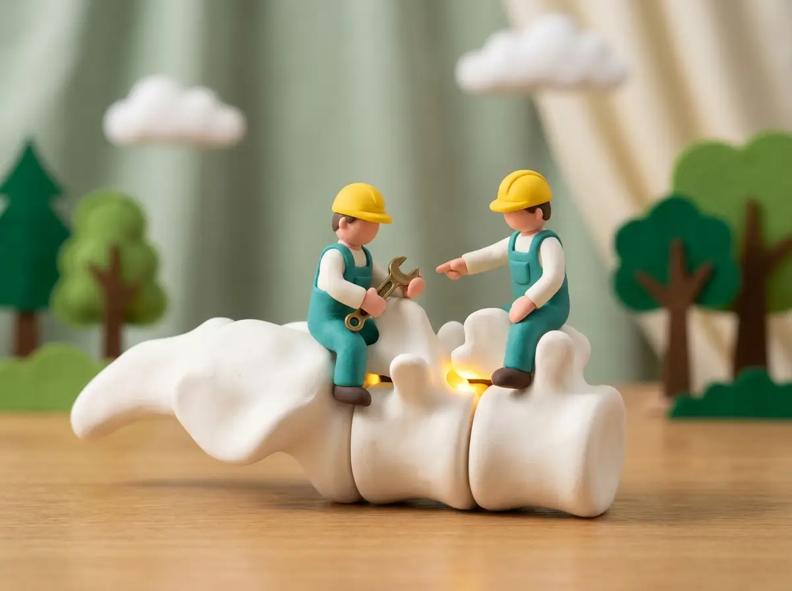

Spinal Adjustments
Precise pressure, exactly where it belongs
The core of chiropractic care: restoring motion to joints that have stopped moving the way they should. Our adjustments are specific and gentle — never a one-size-fits-all crack-and-go.
- Back, neck & headache reliefTargeted care for the three complaints we see most.
- Low-force optionsDrop-table and instrument-assisted techniques — no “popping” required.
- Measured progressRe-assessments at set milestones so you can see improvement, not just feel it.
Book an adjustment
Visits from $65 · new-patient exam $95
